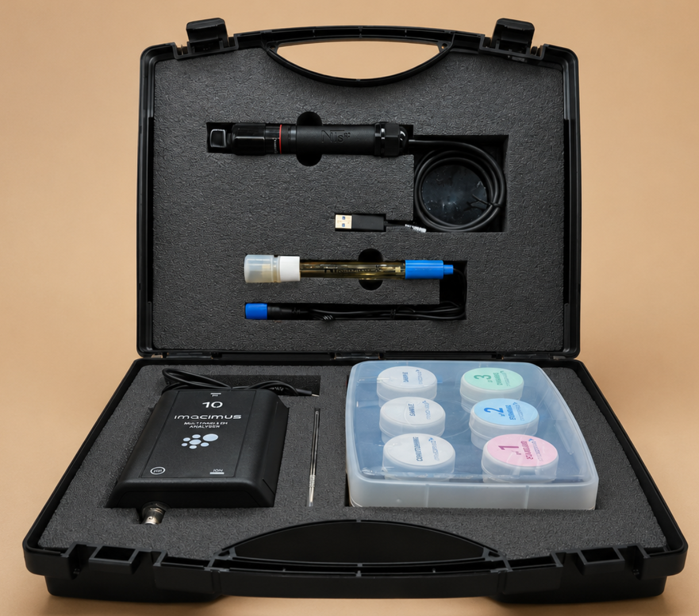

El laboratorio de nutrición vegetal que cabe en tu camioneta. Mide hasta 10 iones directamente en el campo, con resultados en minutos.

Análisis nutricional completo de agua de riego, solución del suelo, savia y extractos foliares.
Patrick capacita a tu equipo y deja todo operativo para que puedas analizar cuando lo necesites.
Agua de riego, solución del suelo, savia o extracto foliar. Sin envío a laboratorio, sin esperar resultados.
El equipo entrega los valores de los 10 iones simultáneamente. Patrick acompaña la lectura y la interpretación.
Con los datos en la mano puedes ajustar el fertirriego, corregir desbalances y validar lo que está pasando.
Misma información nutricional, otra velocidad de decisión.
| Laboratorio tradicional | IMACIMUS 10 | |
|---|---|---|
| Tiempo de resultado | 5 a 15 días | 60 segundos |
| Lugar de análisis | Envío de muestras a Santiago | En el huerto, planta o pozo |
| Costo por análisis | Pago recurrente por muestra | Mucho más bajo |
| Iones medidos | Según paquete contratado | Hasta 10 iones: N, P, K, Ca, Mg, Na, Cl, NH₄, NO₃, pH |
| Decisiones en temporada | Reactivas, con desfase | Preventivas, en el momento |
| Capacitación al equipo | No incluida | Capacitación en terreno |
Imágenes reales del equipo, componentes y software de IMACIMUS 10.
Productos y cultivos donde tomar decisiones rápidas sobre nutrición se traduce directamente en rendimiento.
Seguimiento de nutrición durante la temporada. Detección temprana de desbalances de potasio, calcio o sodio.
Ciclo corto, márgenes ajustados. IMACIMUS permite calibrar el fertirriego cada semana sin disparar el costo.
Monitoreo de salinidad, sodio y cloruro en pozos y canales. Detecta cambios estacionales antes de que sean un problema.
IMACIMUS Multi Ion es un equipo único para analizar la concentración de hasta 10 parámetros (pH, Cl⁻, NO₃⁻, NH₄⁺, Ca²⁺, Mg²⁺, K⁺, Na⁺, dureza y conductividad) en solo 60 segundos.
Desde análisis nutricional vegetal hasta calidad de aguas, alimentos y procesos industriales.
Este KIT COMPLETO contiene todo lo necesario para empezar a analizar: electrodos ISEs, sondas, electrodo de referencia, potenciómetro, soluciones de calibración estándar, tampones de pH y soporte para calibración y medidas.*
*Se requiere un ordenador o sistema para instalar el software. Alimentación y datos a través de un puerto estándar USB 5V.
Patrick te explica el equipo, capacita a tu personal y queda como apoyo técnico. Distribuidor oficial en Chile.